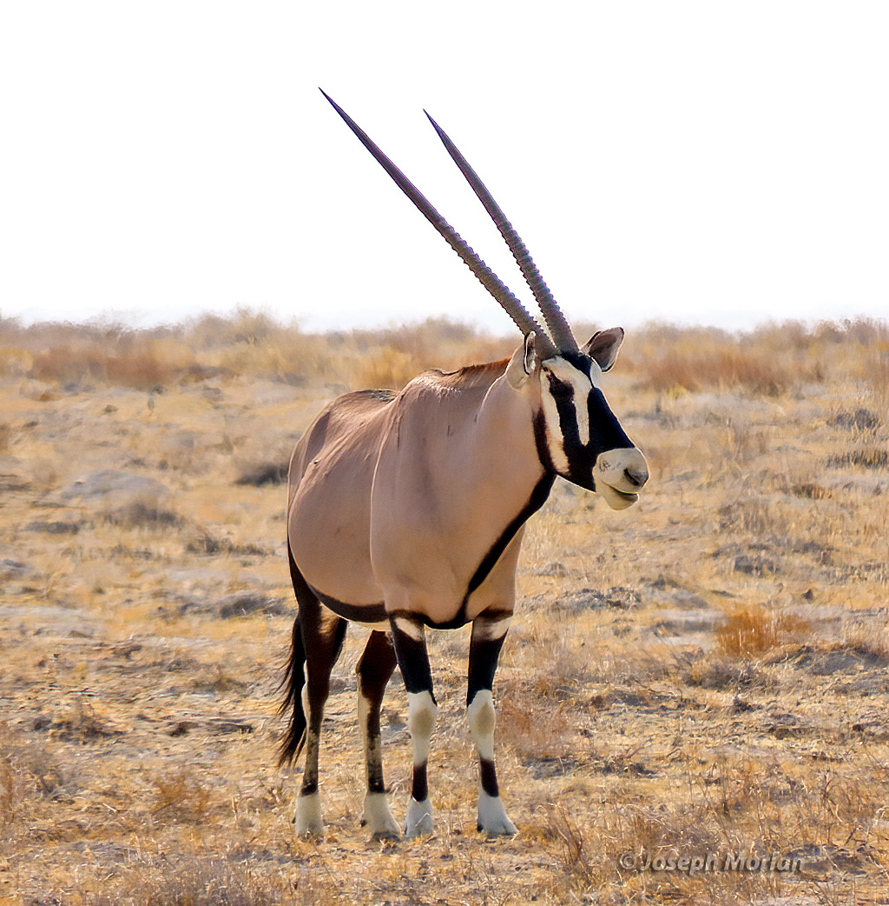
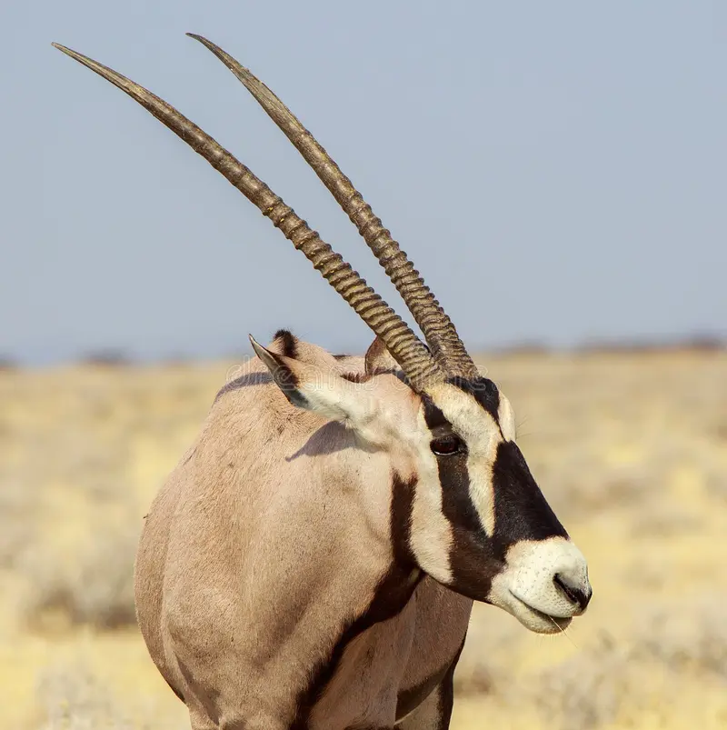
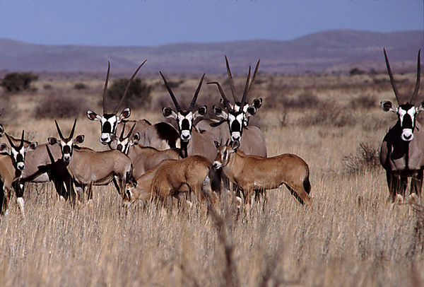
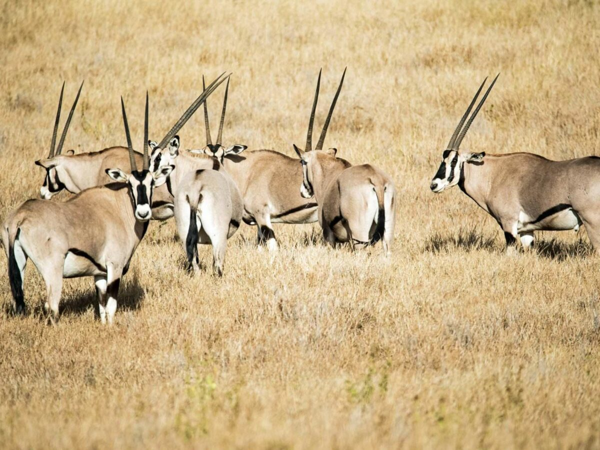
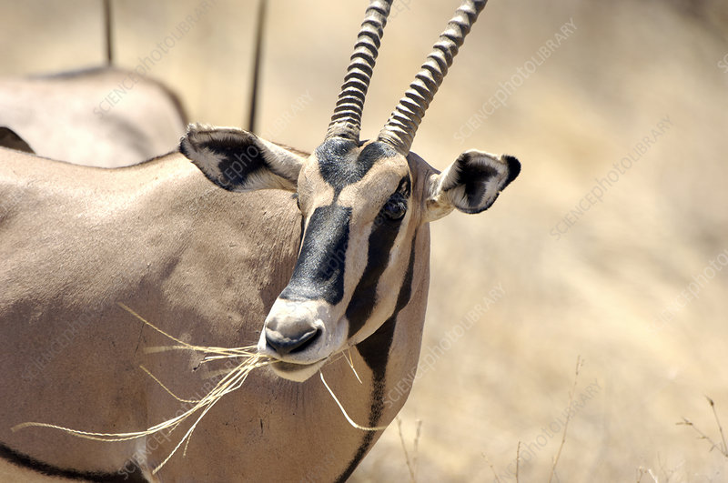

AFRICAN GEMSBOK
-

Gemsbok are light taupe to tan in color, with lighter patches toward the bottom rear of the rump. Their tails are long and black in color. A blackish stripe extends from the chin down the lower edge of the neck, through the juncture of the shoulder and leg along the lower flank of each side to the blackish section of the rear leg. They have muscular necks and shoulders, and their legs have white 'socks' with a black patch on the front of both the front legs, and both sexes have long, straight horns. Comparably, the East African oryx lacks a dark patch at the base of the tail, has less black on the legs (none on the hindlegs), and less black on the lower flanks. One very rare color morph is the "golden oryx", in which the gemsbok's black markings are muted and appear to be golden.
Gemsbok are the largest species in the genus Oryx. They stand about 1.2 m (4 ft) at the shoulder. The body length can vary from 190 to 240 cm (75 to 94 in) and the tail measures 45 to 90 cm (18 to 35 in) Male gemsbok can weigh between 180 and 240 kg (400 and 530 lb), while females weigh 100–210 kg (220–460 lb) -

Female gemsbok use their horns to defend themselves and their offspring from predators, while males primarily use their horns to defend their territories from other males.
-

Gemsbok live in herds of about 10–40 animals, which consist of a dominant male, a few nondominant males, and females. They are mainly desert-dwelling and do not depend on drinking water to supply their physiological needs. They can reach running speeds of up to 60 km/h (37 mph). Gemsbok are mostly crepuscular in nature, since temperatures are tolerable and predator detection rates are highest during these times.
-

The gemsbok is polygynous (meaning one male multiple females), with one resident male mating with the receptive females in the herd. The male is known to secure exclusive mating access to the females by attempting to herd mixed or nursery herds onto his territory. The gemsbok has no specified breeding season, but the young in a given herd tend to be of a similar age due to reproductive synchrony between females. Pregnant females leave the herd before giving birth. The gestation period lasts 270 days and mothers give birth to 1–2 offspring. The calf remains hidden 6 weeks after birth, after which mother and calf rejoin the herd. The calf is weaned at 3+1⁄2 months, becomes independent at 4+1⁄2 months, and achieves sexual maturity at 1+1⁄2–2 years in both sexes.
-

Gemsbokke are Herbivours